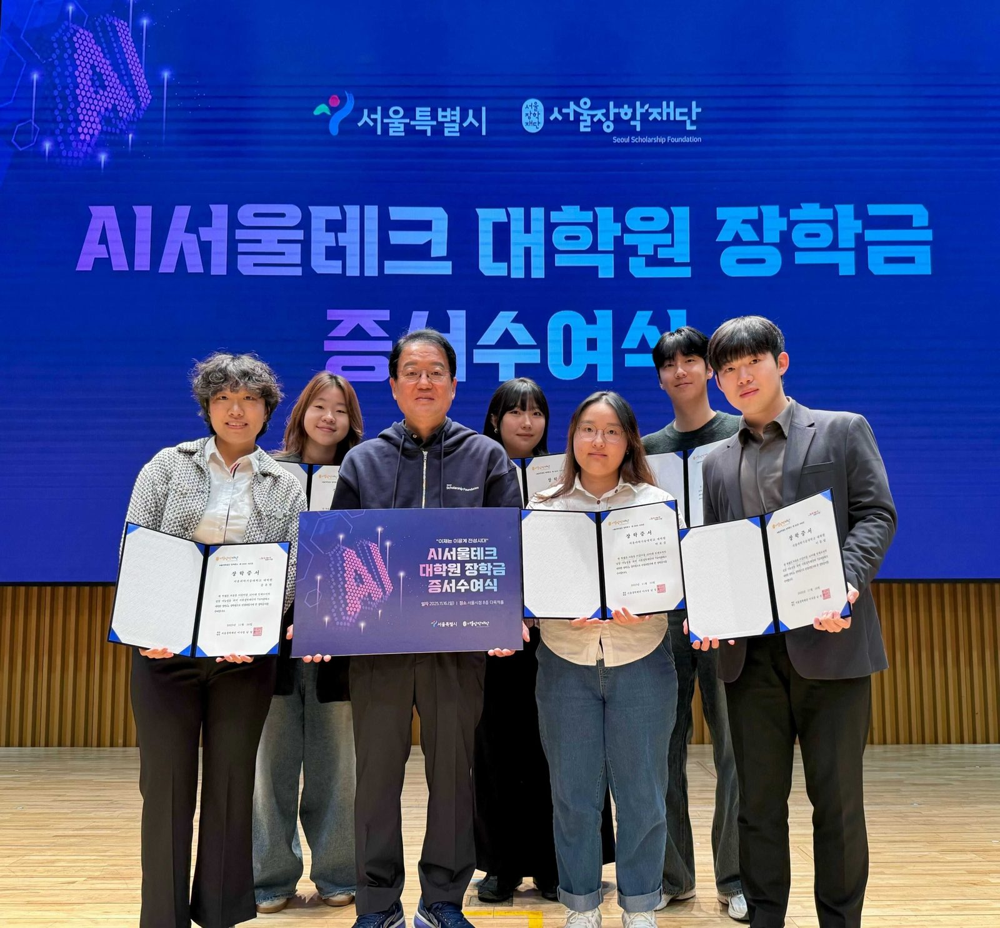

Six Lab Members Selected for the AI Seoul Tech Scholarship

▲ 서울장학재단 남성욱 이사장과 연구원 6인의 장학 증서수여식 단체 사진
서울과학기술대학교 인공지능응용학과 인간중심 인공지능 연구실 소속 연구원 6인이, 서울장학재단이 올해 신설한 「AI 서울테크 대학원 장학금」 장학생으로 선발되는 쾌거를 이뤘다.
이번 선발은 연구 역량과 성적을 기준으로 서울 소재 4년제 대학원생 215명(석사 135명, 박사 80명)을 선발했으며, 한 학기 기준 석사 500만 원, 박사 1,000만 원의 장학금을 지급한다. 각 대학의 선발 인원이 전체 10%(석사 최대 13명, 박사 최대 8명)로 제한된 치열한 경쟁 속에서, 서울과기대 인간중심 인공지능 연구실에서만 박사과정 3명(김유원 석박사통합과정, 박보겸 석박사통합과정, 이동엽 박사과정), 석사과정 3명(박민영 학석사통합과정, 유다나 학석사통합과정, 차승언 학석사통합과정) 총 6명의 장학생을 배출한 것은 매우 주목할 만한 성과로 평가된다.
서경원 지도교수는 “서울시의 핵심 인재 양성 사업에 인공지능응용학과 대학원생들이 대거 선발되어 매우 기쁘다”며, “우리 학과 학생들의 뛰어난 연구 역량을 대외적으로 인정받은 결과라고 생각한다. 이번 장학금이 학생들이 서울시와 국가 AI 발전에 기여하는 최고 수준의 인재로 성장하는 디딤돌이 되길 바란다”고 밝혔다.
Six graduate students from the SeoulTech HAI Lab in the Department of Applied Artificial Intelligence at Seoul National University of Science and Technology have been selected as recipients of the AI SeoulTech Graduate Scholarship offered by the Seoul Scholarship Foundation.
This highly competitive scholarship recognizes outstanding research achievements among master’s and doctoral students in AI and provides significant financial support for their graduate studies. The selection of three PhD-track and three master’s-track students from a single lab highlights the strong research capabilities of our lab and its growing impact in human-centered AI.